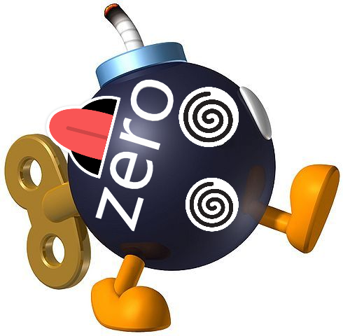

<mat-toolbar>
  <span>
    <a routerLink=""></a>
  </span>  
  <span>
    <a routerLink="/iniciozero">Produtos</a>
  </span>
  <span class="example-spacer"></span>
  <span>
    
    <a routerLink="/loginzero">Login</a>

  </span>
</mat-toolbar>
<router-outlet></router-outlet>